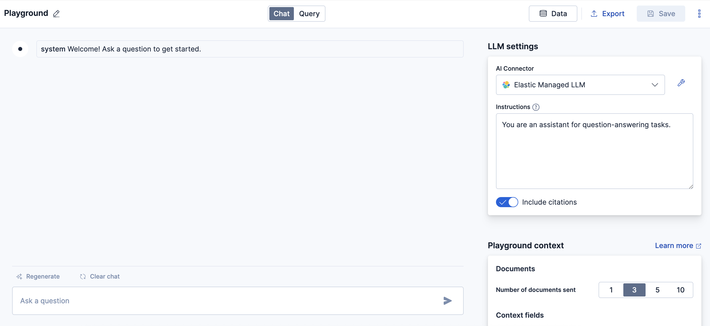
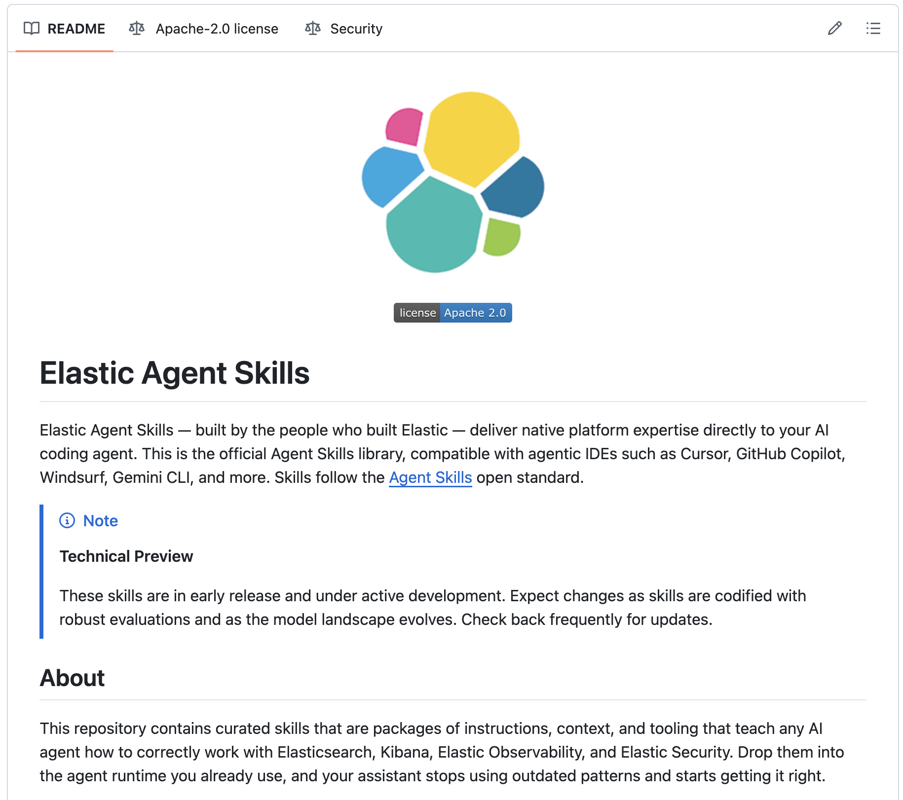

Elastic Agent Builder
for Enterprise Use Cases
Build, deploy, and scale production-grade AI agents — from retrieval to orchestration — powered by the open-source search platform trusted at enterprise scale.
Most Agents Break After Three Turns
The bottleneck is never the model. It's always the context.
- LLMs can reason. They can't remember.
- Stuffing 200k tokens into a prompt isn't a strategy
- Agents need the right context at the right time
- Retrieval isn't a feature — it's the foundation
- Without search, your agent is expensive autocomplete
while (true) {
const response = await llm(
`${entire_knowledge_base}` +
`${all_chat_history}` +
`${user_message}`
)
// $4.20 per turn
// 12 second latency
// still hallucinates
}
The Search Maturity Model
Search didn't jump from keywords to AI. It evolved in five distinct stages — each solving the limitations of the last.
Keyword Search
Exact term matching. Fast and predictable. The foundation of web search for 20+ years.
Limitation
No understanding of meaning. "automobile" won't find "car". Vocabulary mismatch kills recall.
Semantic Search
Embedding models encode meaning into vectors. "car" and "automobile" land nearby. Understands intent, not just words.
Limitation
Loses precision on exact terms, names, codes. Struggles with structured or boolean queries.
Hybrid Search
Best of both worlds. Fuses keyword precision with semantic recall. ELSER adds learned sparse representations. RRF merges rankings.
Limitation
Returns documents, not answers. Users still read and synthesize results manually.
Conversational RAG
LLM generates answers grounded in retrieved context. Conversational memory rewrites follow-ups. Users get answers, not links.
Limitation
Read-only. Can answer questions but can't take actions, call APIs, or chain multi-step workflows.
Agentic AI
Agents reason, plan, and act. Retrieve context, call tools, delegate to other agents, execute multi-step workflows autonomously.
Current frontier
Requires robust retrieval, tool orchestration, guardrails, and observability. This is where Elastic plays.
Key insight: Each stage builds on the previous — you can't skip steps. Agentic AI without solid retrieval is just expensive hallucination. The maturity model is cumulative, not a replacement.
Elastic Playground
UI for building and testing RAG applications without writing code.

Core Modes
- Chat mode — conversations with context retrieval
- Query mode — test and refine ES queries
LLM Flexibility
- Elastic Managed inference
- OpenAI, Bedrock, Azure, local
- Swap models per iteration
Advanced Features
- View & modify ES queries in real-time
- Export Python code for your app
- A/B test models & retrieval strategies
Memory & Context
- Conversational memory rewrites follow-ups
- Session state across turns
- No manual prompt engineering
Requirements
Elasticsearch v8.14+, one index with data, LLM provider credentials (Elastic, OpenAI, Bedrock, Azure, or local)
Three Search Methods. One Query.
Elastic's retrieval pipeline goes beyond vector search — three phases that progressively refine results for maximum relevance.
Multi-Method Search
Business Logic Layer
Semantic Precision
An Agent Without Context
Is Just Expensive Guesswork
Every use case we just covered depends on one thing: getting the right information to the agent at the right time. That's not a model problem. That's a search problem.
Elastic Agent Builder: Build Once. Connect Everywhere.
Chat Integrations via MCP → Tools. Custom Agents via API/A2A → Agents. Native Chat Experience → Elastic UI. All on the Elasticsearch Platform.

Chat + Agents + Tools
Chat
Interactive playground to test and iterate. Connect an index, pick a model, test retrieval — all in the browser. Zero code to start prototyping.
Agents
Custom LLM instructions paired with toolsets. Define behavior, assign tools, set guardrails. Purpose-built agents for support, search, compliance, any use case.
Tools
The actions your agent can take. Custom tools for Elasticsearch context, import external MCP tools, or built-in actions like index search, ES|QL queries.
Build Once. Expose Everywhere.
Dev Tools & AI Assistants
Expose tools to Claude Desktop, Cursor, VS Code, LangChain — any MCP client. Your Elastic tools available where devs already work.
Agent-to-Agent
Your Elastic Agent collaborates with other agents as peers. Google Gemini, AWS Strands SDK, Microsoft Agent Framework. Agent delegation, not just tool calls.
Custom Integrations
Direct API access. Embed in your apps, workflows, CI/CD pipelines, any backend. Full programmatic control over agent interactions.
Import Any MCP Tool Into Your Agent
How It Works
- Create connector in Stack Management → Connectors
- Point to any remote MCP server URL + auth
- Auto-discovers tools via listTools
- Add discovered MCP tools to your agent
What This Unlocks
- PagerDuty MCP for incident management in agents
- GitHub issues, PRs, code search as agent tools
- Slack, Jira, Confluence — any MCP server
- Bidirectional: Elastic also serves MCP for others
One API. Every Model You Need (/_inference)
Fully managed, GPU-accelerated. Swap models per step. Unified inference API across all providers.
Register & Use Any Model
{
"service": "elastic",
"service_settings": {
"model_id": "openai-gpt-4.1"
}
}
Jina SOTA Multilingual Embeddings. Native on Elastic.
v5-text-small — 677M params
Highest scoring multilingual model under 1B parameters. Matches jina-v4 (3.8B) at 5.6x smaller.
v5-text-nano — 239M params
Matches all sub-500M models including KaLM-mini-v2.5 (494M).
Why This Matters
- 5.6x smaller than v4 — same quality
- Native on EIS — zero infra setup
- GPU-accelerated, fully managed, auto-scaling
- Multilingual out of the box
- Works with vector search and hybrid search
Setup — 4 Lines
{
"service": "elastic",
"service_settings": {
"model_id":
"jina-embeddings-v5-text-small"
}
}
Turn AI Agents Into Elastic Experts
What is SKILL.md?
The open agentskills.io standard. Each skill is a folder with a SKILL.md file — structured metadata + instructions. When an AI agent reads it, it learns how to perform Elastic tasks correctly — right APIs, right patterns, right guardrails.
26 Skills Available
- Elasticsearch — Search, indexing, ES|QL, auth, audit, file-ingest, troubleshooting
- Kibana — Agent-builder, alerting, audit, connectors, dashboards, streams, vega
- Observability — LLM-obs, logs-search, SLOs, service-health
- Security — Alert triage, case mgmt, detection rules, sample data
- Cloud — Access mgmt, create/manage projects, network security, setup
Works With

What You Can Build With Vibe Coding + Elastic Skills
"Build me a hybrid search API"
Agent creates index mapping, sets up ELSER, configures hybrid search with RRF, writes API endpoint — all following Elastic best practices from the skill.
"Create an APM dashboard"
Kibana skill builds full observability dashboard — service maps, latency charts, error panels, SLO tracking. Correct APIs, correct JSON.
"Set up brute force detection"
Security skill creates EQL/ES|QL detection rules, configures alert actions, sets severity and risk scoring correctly.
"Build a RAG agent for our docs"
Sets up ingestion, creates vector index, configures inference, builds agent in Agent Builder — end-to-end in one conversation.
"Why is my cluster yellow?"
Checks shard allocation, identifies unassigned shards, diagnoses root cause, applies fix — all through correct ES APIs.
"Ingest my Kafka logs"
Fleet skill configures integration, sets up ingest pipelines with grok processors, creates index templates, verifies data flow.
github.com/elastic/agent-skills — Open source. Apache 2.0. Contribute your own.
Agents for Regulated Industries
BFSI
- Fraud investigation — transaction patterns + compliance rules via hybrid search
- KYC document retrieval — scanned docs to minutes, not days
- Compliance Q&A with citations and audit trails
Public Sector
- Citizen services — navigate permits, benefits in plain language
- Policy research — legislation via hybrid search, not keyword
- On-prem, air-gapped, FedRAMP-ready deployment
Healthcare
- Clinical decision support — indexed medical literature with citations
- Document-level security for HIPAA compliance
- Risk assessment with ES|QL aggregations
Key differentiator: Document-level security, on-prem deployment, auditable retrieval trails. Your data stays where compliance requires.
Agents for Every Business
Mid-Market
- IT support — resolves L1/L2 from runbooks + past resolutions
- HR policy assistant — multi-language via Jina v5
- Incident response — correlates logs, metrics, traces automatically
Digital Natives
- Developer docs agent — search by intent, get right code snippet
- In-product search — users self-serve via REST API or MCP
- Log analysis — "why did deploy-42 fail?" with ES|QL
E-Commerce
- Shopping assistant — semantic intent + price filters in one query
- Personalization — behavioral signals + product vectors
- Returns & support — multi-language, MCP-connected logistics
500+ connectors — Confluence, SharePoint, Google Drive, ServiceNow, Salesforce. Federate all your data through one agent.
How the Market Actually Stacks Up
| Capability | Elastic | Pinecone / Weaviate | MongoDB Atlas | OpenSearch |
|---|---|---|---|---|
| Hybrid Search (BM25+Vector+Sparse) | Native | ~ Limited | ~ Basic | ~ Partial |
| Learned Sparse (ELSER) | Built-in | No | No | No |
| Agent Builder + Playground | GA | No | No | No |
| MCP + A2A Support | Native | No | No | No |
| Agent Skills (Open Standard) | 26 skills | No | No | No |
| Managed Model Catalog (EIS) | Full | ~ Limited | ~ Some | ~ Basic |
| 500+ Data Connectors | Yes | Few | ~ Some | ~ Fork lag |
| Observability | Unified | No | No | ~ Basic |
| Security (SIEM/SOAR) | Unified | No | No | ~ Limited |
One Platform. Three Superpowers.
Search
Hybrid retrieval backbone. Model catalog with Jina v5, ELSER. Your agent's knowledge layer.
Observe
Logs, metrics, traces, APM. Monitor agents in production. Operational memory.
Protect
SIEM, endpoint, SOAR. Document-level security. Compliance built in.
Build Something Today
Elastic Cloud
14-day free trial. Agent Builder included. Playground for no-code prototyping.
Agent Skills
Install 26 Elastic skills in Claude Code, Cursor, or any agent.
Docs & Community
Quick-start guides, GitHub repos, Elastic Community Slack, Search Labs.
The best agent is the one
your users actually trust.
That starts with the right context, at the right time, from a platform you can inspect, control, and extend.